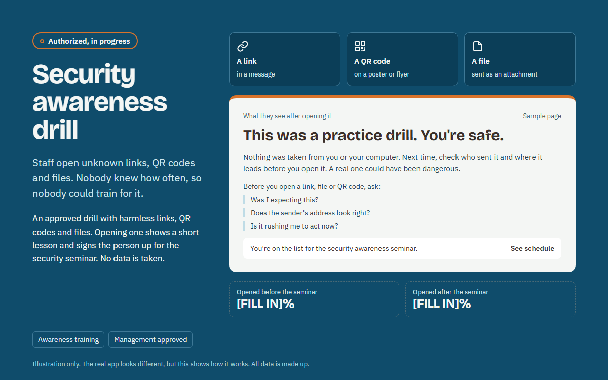

#SEC-003Approved, in progress
Security awareness drill
An approved drill with harmless links, QR codes and files. Opening one shows a short lesson and signs the person up for our security seminar. No data is taken.
Awareness trainingManagement approved